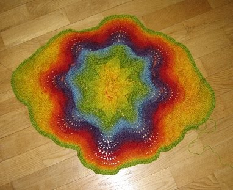

Cell-o

Välkommen till min informationssida om Cell-O! Människosläktet definierat Cell-O som ett djur. Cell-O är en missförstådd entitet, “det” flyger runt bland mörk materia och letar efter en vän men med sin kraft förstör “det” solsystem utan att veta om det själv. Vi har skapat denna sida för att vi vill hjälpa Cell-O att hitta en vän.